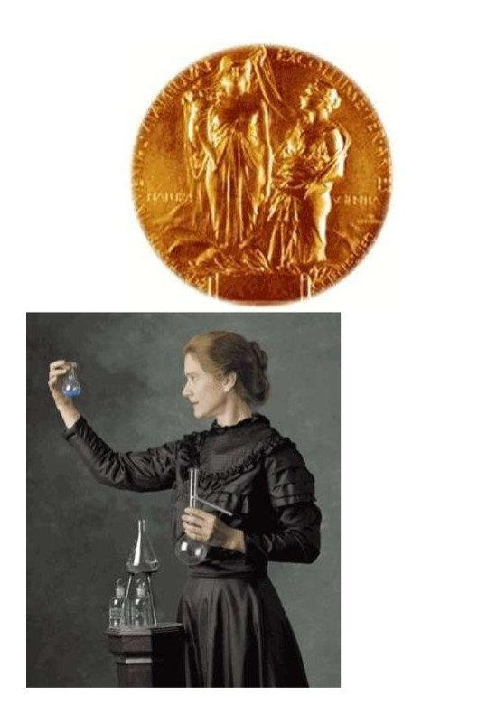

Lời Giới Thiệu
Trong những nhà bác học lớn của thế kỷ 20, thế kỷ của vật lý học, có một hình ảnh sáng ngời rất đỗi gần gũi chúng ta. Đó là Marie Curie, nữ bác học người Ba Lan, mà tên tuổi cùng với chồng là nhà vật lý Pháp Pierre Curie, gắn liền với một giai đoạn phát minh khoa học và phát triển kỹ thuật vô cùng rạng rỡ trong lịch sử văn minh loài người.

.
Một khám phá đảo lộn cả nền triết học và vật lý của mấy thế kỷ trước, là ánh bình minh của thời đại nguyên tử, trong điều kiện nghiên cứu thô sơ, tạm bợ “bốn năm ở một nhà xe” nghe như chuyện thần tiên lại do một phụ nữ rụt rè, thầm lặng, tính tình nếp sống chẳng khác gì chị em lao động bình dị, chất phác, nhưng tâm hồn, tư tưởng có tầm vóc thời đại.
Cuối thế kỷ 19, nước Ba Lan còn bị vùi dập dưới ách phong kiến phụ thuộc. Do tư tưởng trọng năm khinh nữ, thời đó phụ nữ không được vào Đại học, Maria Salomea Skłodowska, con một gia đình nhà giáo yêu nước bị chèn ép, đã không chịu sống trói buộc, thấp hèn, ra sức học hỏi tích luỹ kiến thức với một lý tưởng quán xuyến cả cuộc đời say mê khoa học.
Em bé chưa đầy mười hai tuổi mồ côi mẹ, thời thơ ấu bị đau thương đè nén, càng yêu quê hương đất nước, yêu từ tiếng nói đến lịch sử dân tộc. Đang học trung học, mặc dầu bị cấm đoán Maria Skłodowska vẫn lén lút tìm dự các buổi “Đại học di động”. Say sưa với những luồng tư tưởng tiến bộ hướng về tầng lớp lao động.
Cô gái mười bảy, hiếu thảo tận tình, muốn giúp chị có tiền ra học nước ngoài, đỡ đần cha và dành dụm thêm cho mình, đã đi tỉnh xa dạy tư tám năm ròng rã, gần gũi con em nông dân với một lòng yêu chân thành. Tha thiết khêu gợi cho các em thấy vẻ đẹp của tiếng nói mẹ đẻ và lịch sử đất nước Ba Lan. Cô tìm thấy ở các em “niềm vui lớn và nguồn an ủi chính” của mình, ở địa phương hẻo lánh, không người hướng dẫn, cô vẫn tự mình cố gắng học thêm.
Cô nữ sinh viên 25 tuổi, miệt mài sách vở, kham khổ ba năm để giành hai bằng cử nhân toán lý, đỗ nhất và nhì đồng thời trang bị cho mình một vốn kiến thức khoa học cơ bản vững chắc. Khi tốt nghiệp xong, cô đã hoàn lại học bổng mình nhận trước kia, để số tiền này lại có thể giúp một bạn học nghèp khác.
 .
.
Marie Sklodowska, sinh viên năm 1895
Người mẹ hai con vẫn thi thạc sĩ đỗ đầu, lại chuẩn bị thi tiến sĩ. Bốn mươi lăm tháng trời vất vả, nghiên cứu các chất phóng xạ, cùng chồng tìm ra hai kim loại mới, và cả phương thức khai thác. Một thành công kỳ diệu đã đem lại cho hai vợ chồng giải Nobel vật lý 1903, chung với một nhà bác học nổi tiếng đương thời.
Người quả phụ 38 tuổi, trong bước thảm khốc của đời mình đã nén đau thương, tần tảo lao động nuôi con và chăm sóc bố chồng già, lại đảm đương trọng trách thay chồng một cách xuất sắc, tiếp tục nghiên cứu, phát minh, đặt nền móng cho một khoa học và một công nghiệp mới, giật thêm một Noben về hoá học. Có thể cho con cái một gia tài lớn, nhưng bà đã đem lại cho nhà nước Pháp mảnh kim loại trị giá một triệu “francs” và đem tiền thưởng Noben cùng trang sức của mình chuyển thành quốc trái, với ý nghĩ đơn giản mà cao đẹp: “Con cái nó phải tự kiếm sống là điều lành mạnh tất nhiên”. dạy dỗ con gái thành tài, sau này cũng nối nghiệp mẹ và cũng được giải Nobel (1934).
Nữ bác học nổi tiếng vẫn giữ bản chất tốt đẹp của một người lao động, cần mẫn, giản dị, không hay nói đến mình, không thích tiền tài, danh vọng, chỉ say sưa nghiên cứu, chỉ muốn làm việc và cống hiến. Trong chếin tranh, ra tiền tuyến với chiếc xe điện quang tự thiết kế, bà lăn lộn khắp chiến trường cứu chữa thương binh, như một chiến sĩ, chẳng nề hà gian khổ, chẳng đòi hỏi đối xử riêng biệt. Nhìn rõ trách nhiệm của người trí thức “không thể đứng trên cuộc chiến đấu và sẽ phản lại sứ mệnh của mình, nếu không kiên trì bảo vệ văn minh và tự do tư tưởng”. Chính nhờ đi vào thực tế cuộc sống chiến đấu mà bà đã có thêm nhiều thành tựu độc đáo về khoa học ứng dụng và kỹ thuật thực hành. Như đã thấy được đây là cả một sự nghiệp quần chúng, bà đã đào tạo hàng trăm người làm công tác khoa học kỹ thuật là con em nhân dân lao động cho yêu cầu thời chiến. Càng tha thiết đến tiền đồ khoa học, bà càng quan tâm đến “những tài năng chưa phát triển, trong những tầng lớp xã hội ít được nâng đỡ” vì “một nông dân, một công dân, biết đâu chẳng là mầm mống một nhà văn, nhà bác học, hoạ sĩ?”
Nhà tri thức chân chính và từng trải đã thành một người có tài tổ chức và cổ vũ, ra sức vun đắp thế hệ trẻ với lòng hy sinh cao cả, vừa chỉ đạo chuyện môn, vừa hoạt động xã hội “chú trọng phát triển các học bổng quốc tế về nghiên cứu khoa học, đấu tranh cho một nền văn hoá quốc tế vẫn tôn trọng các nền văn hoá dân tộc, bảo vệ nhân cách và tài năng bất cứ nơi đâu, củng cố sức mạnh tinh thần lớn lao của khoa học trên thế giới”.
Qua hình ảnh Marie, người phụ nữ Ba Lan giàu tình cảm ước mơ, nhưng còn giàu nghị lực và ý chí hơn nữa, luôn luôn cưỡng lại số phận tàn khốc, vươn lên làm tròn nhiệm vụ mà cuộc sống và lịch sử đặt cho mình, ngay cả lúc đau khổ nhất, hàng vạn chị em phụ nữ Việt Nam có thể tìm thấy những nét về thời tuổi trẻ và đời sống tình cảm của mình, của những con người dũng cảm, bất khuất, trung hậu, đảm đang trên hai miền đất nước. Và kiều bào ta trên thế giới bấy lâu da diết nhớ quê cha đất tổ giờ đây thông cảm hơn bao giờ hết với người trí thức Ba Lan bốn chục năm xa quê hương vẫn không quên được tiếng mẹ đẻ và dòng sông Vit-xtuyn, vẫn tha thiết với vận mệnh và tiền đồ tổ quốc Ba Lan, đã tìm cách tặng thủ đô Vác-xô-vi của lòng mình một viện Ra-đi-om, để đền đáp ơn nghĩa chôn nhau cắt rốn vì đã gửi gấm cả cuộc đời hoạt động khoa học trên đất nước người.
Ngày nay trên đất nước đang lớn lên, có bao khó khăn, thử thách chúng ta càng được khích lệ và tin tưởng khi nghĩ đến điều kiện làm việc rất đỗi khó khăn mà lại thành công rực rỡ của Marie Curie. Chị em phụ nữ ta đều có thể học tập những điều bổ ích ở cuộc đời và sự nghiệp của Marie Curie ở lòng say mê học hỏi nghiên cứu phát minh khoa học không vì tiếng hay danh vọng và đức tính cần cù, nhẫn nại, giản dị, thanh liêm.
Học tập giờ đây đâu chỉ là nhu cầu cuộc sống mà còn là phẩm chất đạo đức, là đấu tranh với thiên nhiên và bản thân khắc phục mọi trở ngại khó khăn do dốt nát sinh ra, nâng cao mại trình độ tiếp thu và tích luỹ kiến thức của dân tộc và thế giới nhằm giải quyết tốt đẹp mọi vấn đề đời sống con người và xã hội, vì ngày mai hạnh phúc huy hoàng của nhân dân ta, dân tộc ta, Tổ quốc ta.
Trân trọng giới thiệu với bạn đọc cuốn “Nữ bác học Marie Curiei” do con gái bà là Éve Curie viết, nguyên bản tiếng Pháp đã được dịch ra 26 thứ tiếng. Một tác phẩm sinh động chân thật về một phụ nữ đại tài, một nhà khoa học chân chính.
Tháng 4 năm 1982
ĐÀO TRỌNG TỪ